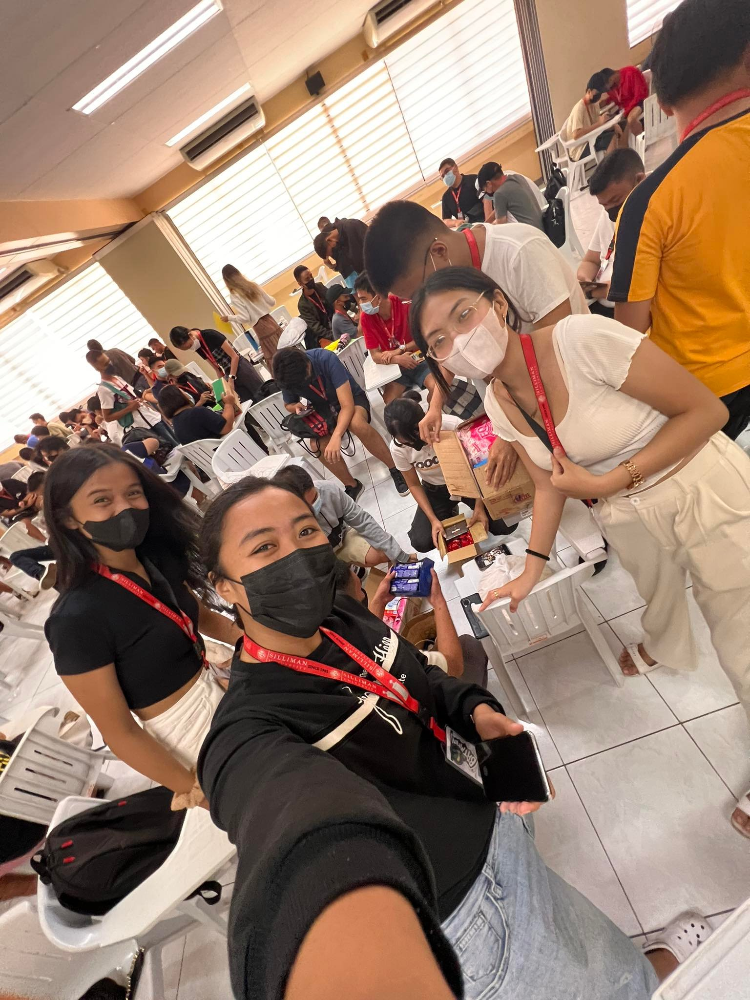
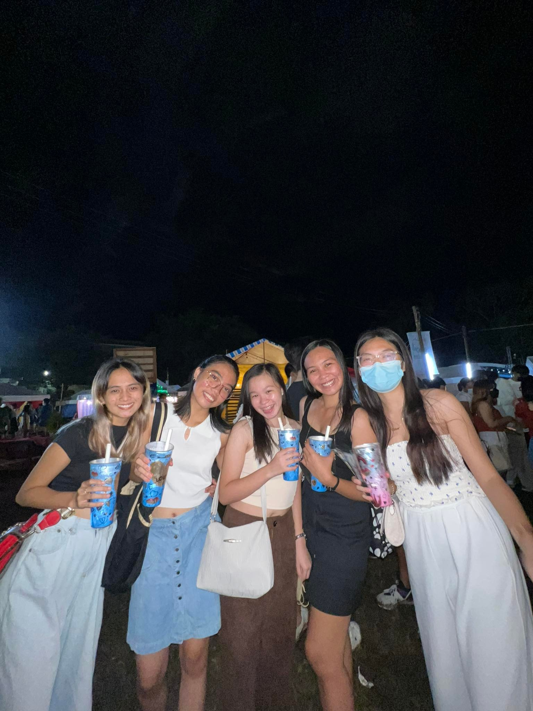
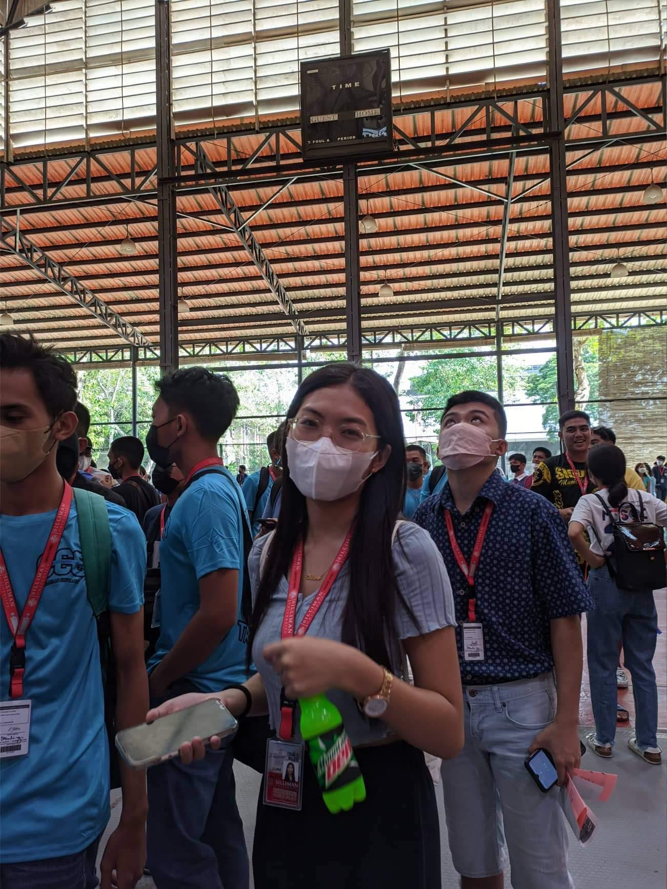
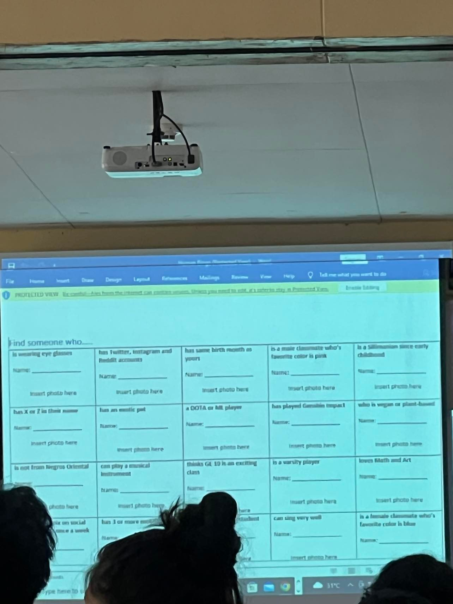
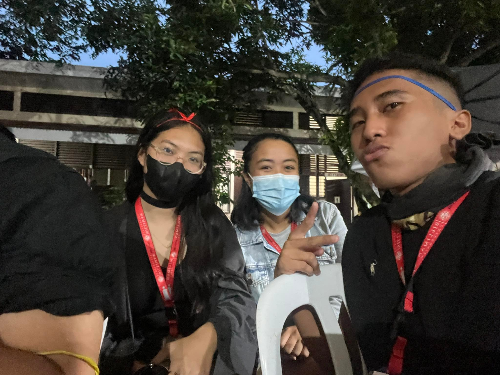
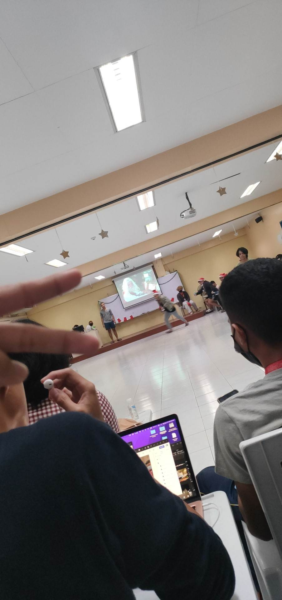
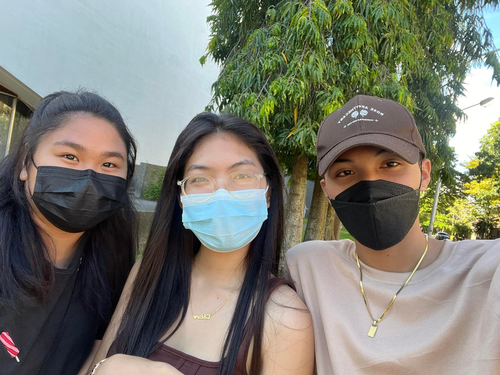

12/07/22(12:00pm)
Sto. Niño Orphanage
Miss Joy Dy
Participant
As we gathered to organize and pack the gifts, a sense of joy and anticipation filled the room.
It was a reminder of the power of giving and the importance of reaching out to those in need.
Collaborating with my fellow students, we carefully selected and wrapped each gift,
knowing that it would bring smiles and happiness to the children at the orphanage.

08/25/22(7:00am)
University Acquaintance Party
Silliman University
Spectator
The university acquaintance party at Silliman University was a vibrant and unforgettable
event that brought together students from various faculties and departments. It was a
celebration of diversity and a chance to connect with fellow students from different
backgrounds and interests.

10/12/22(3:00pm)
Freshmen Orientation
Silliman University
Participant
The CCS freshmen orientation at Silliman University was an enlightening and
empowering experience for me as a new student in the College of Computer Studies.
The orientation provided a comprehensive overview of the department,
its programs, and the resources available to support our academic journey.

08/24/22
Guidance and Counseling Office Activity Day 3
Silliman University
Participant
The Guidance and Counseling Office Activity Day 1 at Silliman University was an
insightful and empowering experience. The activities throughout the day were
thoughtfully designed to promote personal growth, self-awareness, and mental well-being.

09/24/22 (5:30pm)
CCS Acquaintance Party
Silliman University
Participant
The CCS acquaintance party at Silliman University was a memorable and enjoyable event that brought
together students from the College of Computer Studies in a fun and social atmosphere. It provided
an opportunity to forge new friendships, connect with fellow classmates, and establish a sense of
belonging within the CCS community. The party was filled with laughter, music, and various
interactive activities that allowed us to relax and unwind from our academic responsibilities.

12/17/22(5:00pm)
CCS Christmas Party
Silliman University
Participant
The party provided a wonderful opportunity for students, faculty, and staff of the College of
Computer Studies to come together and enjoy a night of fun and camaraderie. It was a time to
relax, unwind, and create lasting memories with classmates and friends. This Christmas party
reminded me of the importance of taking a break from our academic pursuits and cherishing the
moments of joy and togetherness.

08/26/22(2:00pm)
Hibalag
Silliman University
Spectator
HIBALAG left a lasting impression on me, reminding me of the beauty and diversity of
our country's culture, and inspiring me to actively participate in preserving and
celebrating our heritage.